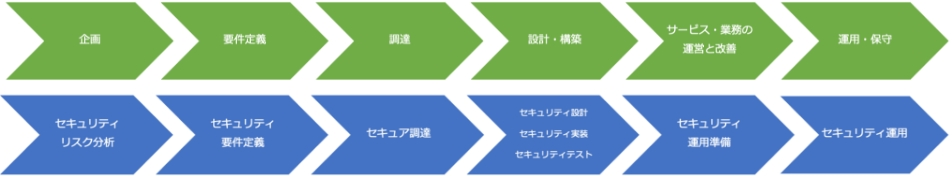

19-1-1. テキストの活用
活用のポイント
本テキストを通してセキュリティ対策を実践するために、自組織のレベルに応じて、認識すべき事項を把握した上で、参考となる章を選択した活用法が効果的です。以下のアクションに沿って本テキストを活用してください。
1．「DXの理解から対策の実践まで」のポイントを再認識する

2．経営者を含めた関係者と共有する
3．経営者のリーダーシップによって社内体制を確立する
4．具体的なアクションを起こして一歩ずつ実践する
1．「DXの理解から対策の実践まで」のポイントを再認識する
「DXの理解から対策の実践まで」の各章の内容は以下の通りです。
DXの推進の考え方の把握
第1章
現代社会のITに関する情勢、Society5.0やDXについて紹介
第5章
政府が発表している国の基本方針や、国が目指している社会を実現するための計画を通じて、IT、デジタル、サイバーセキュリティの方向性・課題について紹介
セキュリティ対策の全容の認識
第2章
近年のサイバー攻撃の傾向や手法を、実際のインシデント事例など通して把握し、それらの脅威に対する対策や、実際に被害にあってしまった際の対応方法を紹介
第3章
サイバーセキュリティの基本的な知識や対策や、自社のリスク状況や活用可能なリソースを考慮した、脅威に対する最適な対処方法を紹介
第4章
これからの企業経営で必要な観点となる社会の動向、「守りのIT投資」や「攻めのIT投資」などのIT投資、経営投資としてのサイバーセキュリティ対策の重要性を紹介
第6章
NISCによるサイバーセキュリティ戦略を通じて、DXとサイバーセキュリティの確保を同時に推進する重要性、サイバーセキュリティに関連する法令（個人情報保護法とGDPR）について紹介
第7章
ISMSをはじめとしたサイバーセキュリティ対策における代表的なフレームワークの特徴を紹介
第8章
ISMSを前提としたサイバーセキュリティ対策における基準を3段階にレベル分けし、各基準の手法を紹介
第9章
ISO/IEC 27002における管理策の分類と構成について紹介
第10章
ISO/IEC 27000に記述されている「リスク」、「脅威」、「脆弱性」、「管理策」といった用語の定義、それらの用語の関係性、脅威や脆弱性の識別方法を紹介
自組織でのセキュリティ対策の実施項目の認識
第11章
リスクマネジメントの概要と、リスクマネジメントプロセスにおけるリスクアセスメントの手法やリスク対応の考え方を紹介
第12章
セキュリティインシデント事例を参考にするクイックアプローチと、ガイドラインやひな形などの資料を参考にするベースラインアプローチにおける対策基準・実施手順の策定方法を紹介
第13章
情報セキュリティマネジメントシステム（ISMS）のフレームワークを用いて、体系的・網羅的にセキュリティ対策基準、実施手順を作成する網羅的アプローチについて紹介
自組織として実践準備
第14章
情報セキュリティ方針に従ってセキュリティ対策を実施するための具体的な規則として、組織的管理策を用いた「対策基準」と、セキュリティ対策の実施手順や方法である「実施手順」について紹介
第15章
情報セキュリティ方針に従ってセキュリティ対策を実施するための具体的な規則として、人的管理策を用いた「対策基準」と、セキュリティ対策の実施手順や方法である「実施手順」について紹介
第16章
情報セキュリティ方針に従ってセキュリティ対策を実施するための具体的な規則として、物理的管理策を用いた「対策基準」と、セキュリティ対策の実施手順や方法である「実施手順」について紹介
第17章
情報セキュリティ方針に従ってセキュリティ対策を実施するための具体的な規則として、技術的管理策を用いた「対策基準」と、セキュリティ対策の実施手順や方法である「実施手順」について紹介
第18章
セキュリティ対策をした結果、効果があったのか、目標に近づいているかを判断するための取組である監査について紹介
2．経営者を含めた関係者と共有する
本テキストの「第19章. 総括編」をエグゼクティブサマリとして活用してください。記載内容を理解し、経営者および他関係者と共有します。
3．経営者のリーダーシップによって社内体制を整備する
Security by Designの観点で、ITの導入（企画・計画・仕様策定・調達・運用・保守など）を実践するためのIT人材を育成します。
人材育成の指針を検討する際は、デジタルスキル標準に示された指針を参考にすることが有効です。デジタルスキル標準は、「DXリテラシー標準」と「DX推進スキル標準」の2種類で構成されています。
デジタルスキル標準
DXリテラシー標準
ビジネスパーソン全体がDXに関する基礎的な知識やスキル・マインドを身につけるための指針
※DXを利用する立場の方向け
DX推進スキル標準
企業がDXを推進する専門性を持った人材を確保・育成するための指針
※DXを推進する立場の方向け
経営層をはじめ、法務や広報といった、必ずしもITやセキュリティに関する専門知識や業務経験を有していない人材には、プラス・セキュリティ（自らの業務遂行にあたってセキュリティを意識し、必要かつ十分なセキュリティ対策を実現できる能力）を習得させることが重要です。実践にあたっては、関係機関が提供している資料や市販の参考書を参考にしてください。
参考文献）
- デジタルスキル標準Ver.1.1 2023年8月（出典：IPA）
- 「プラス・セキュリティ知識」とは？（出典：経済産業省）
4．具体的なアクションを起こして一歩ずつ実践する
Security by Designを実践します。DX化、具体的なIT導入にあたって、セキュリティ対策を含めた実践を行います。
図72. IT導入プロセスにおけるセキュリティ対策の実施タイミング
実践にあたっては、関係機関が提供している資料、市販の参考書を参考にしてください。
参考文献）
セキュリティ・バイ・デザイン導入指南書（出典：IPA）
実践のために参考となる文献（参考文献）